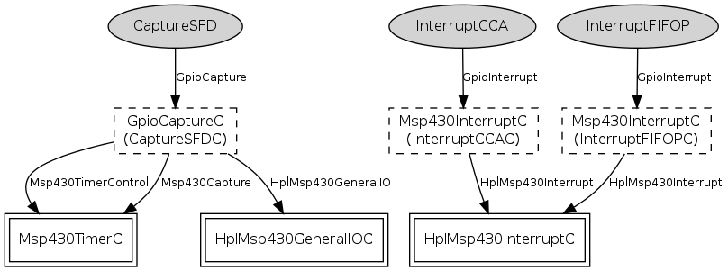

Component: tos.platforms.telosa.chips.cc2420.HplCC2420InterruptsC
configuration HplCC2420InterruptsC
HPL implementation of interrupts and captures for the ChipCon
CC2420 radio connected to a TI MSP430 processor.
- Author:
-
Jonathan Hui <jhui@archrock.com>
- Version:
-
$Revision: 1.4 $ $Date: 2006-12-12 18:23:44 $
Provides
Wiring
